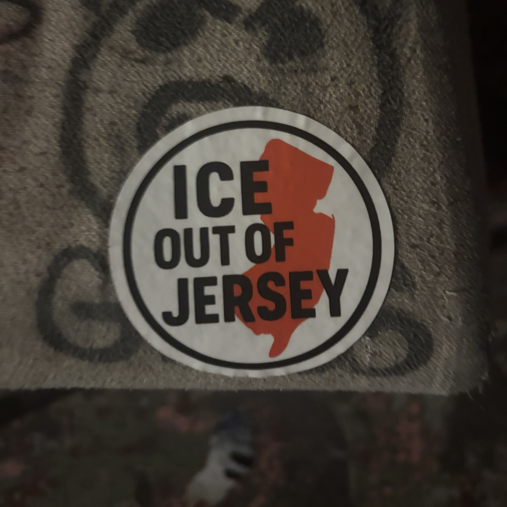
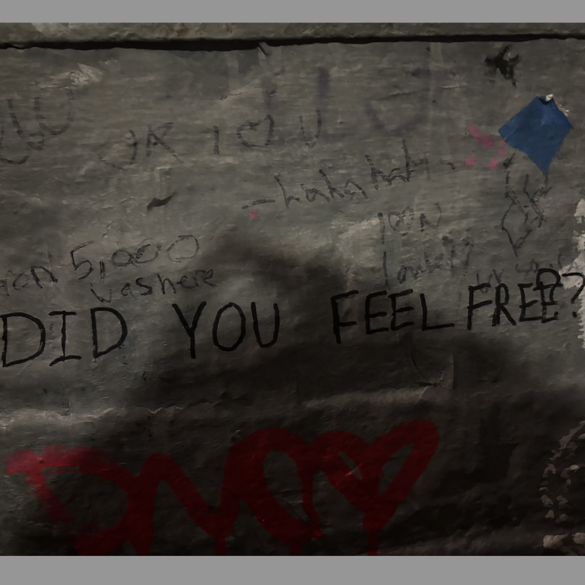
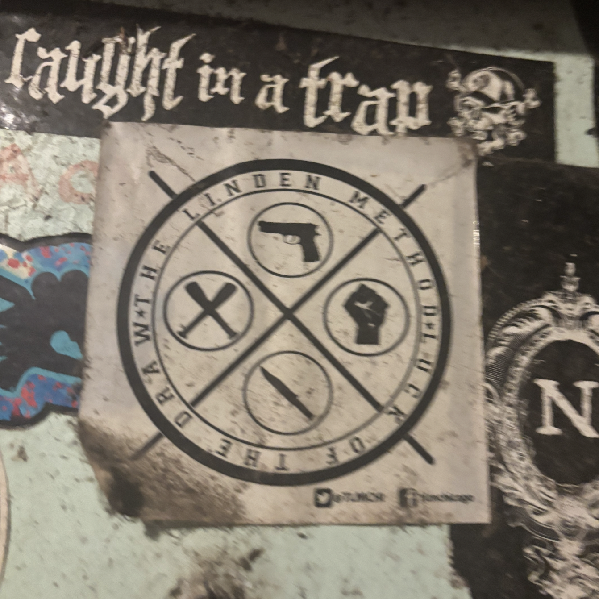

The origin of the word “punk” is that it was used as a derogatory prison term against homosexuals and other people who did not fit within the boxes that society provided for them. Before that, it was used by Shakespeare to describe homosexuals as well. Eventually, in the 1950’s, it was used to describe rock music that critics deemed too “out there”. During the 1970s, New York was reportedly a madhouse due to the lack of laws. From this chaos, a new movement was created. In 1976, Alan Vega adopted the term to describe his band “Suicide” and put posters around New York City as promotion.
Surprisingly, the movement was a hit, and people began adopting it. Many felt at peace with the music and the politics behind it because they felt as though it allowed them to be themselves. It was a stark contrast to the Hippie movement of the 1960s and 70s. Hippies liked to escape reality, while punks embraced it and had a “what can we do about it” attitude. It was an interesting way of turning similar political values into two completely different movements. Many people not involved in either movement felt less threatened by the hippie movement because they felt as though the hippies would stay in their imagined bubble rather than lashing out as the punks did.
In the East Village, the punks moved into the nightclubs where the Hippies once were. Even famous artists such as Andy Warhol moved to popularize the movement, showcasing the art and attracting people who otherwise would not experience the subculture. Even though famous artists were present, the punks were challenging the commercialization of the music scene and the complacency of the other alternative movements of the time. The music was described as abrasive and offensive. The most important aspect of the movement was for people to be themselves.
Punk rock’s philosophy is decentralized, anti-authoritarian, and self-reliant, rejecting consumerism and conformity while encouraging critical thinking. During the Cold War in the Eastern Bloc, cultural expression was perceived as a direct challenge to the state’s controlled connotation of truth. Punk culture relied on raw and independent energy, and it bypassed state-controlled music conservatories and government censors.
In the East German punk scene known as Ostpunk, the Stasi, which was the official intelligence service and secret police of communist East Germany, viewed them as a major threat. These authorities often cracked down on performances and arrested musicians for “anti-state agitation” and often forcibly put punks into the military to dismantle local scenes.
Additionally, in the Soviet Union, state-sanctioned music was highly regulated and patriotic. To work around this, Soviet punks made “bone music” by recording Western punk onto discarded hospital X-rays. Inside their sound, they infused themes of depression, substance abuse, and anti-establishment.
Other countries, like Hungary and Czechoslovakia, witnessed the rise of punk rock, leading to mass persecution of punk members.
The idea of imagined communities was developed by Benedict Anderson in his most famous book. He states that a nation is a social construct, rooted in the fall of governments and the rise of a shared identity through technology and culture. He also notes that nations maintain some of the systems that they overthrew in the first place. Even when people have the same goals, national identity will lead them to turn against each other.
We see this when we turn to the punk movement, especially in London, through fashion. The punk movement was a response to the Hippie movement, and punks shared the Hippies' goals but wanted to pursue them differently. Additionally, the way that the punks dressed themselves was distinct from everyone else, and they were easy to spot in a crowd of people not involved in the subculture. Designers like Vivienne Westwood commercialized the idea of punk and made it something that people could buy into. Because of the way that the punks portrayed themselves, they felt at home even without sharing their ideas.
In 1975, Richard Hell was seen in the East Village in NYC when Malcom McLaren of London decided to expand the movement there. His wife, Vivienne Westwood, popularized the punk movement within the UK with the shared identity of fashion.
Today, people turn to punk and other alternative movements because it allows them to feel free and escape the current political climate. Check out these photos and videos from the NJ scene!


